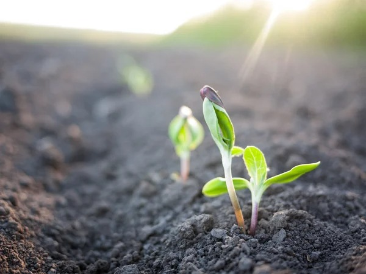

Objetivo Geral
Desenvolver um site para incentivar a população a adotar meios de transporte ecológicos e disseminar o plantio de plantas nativas em áreas urbanas carentes de arborização.

Objetivos Específicos
- Promover o uso de bicicletas e caminhadas para reduzir emissões de poluentes.
- Aumentar a arborização em regiões críticas das cidades.
- Engajar a comunidade por meio de campanhas educativas e eventos de plantio.
- Disponibilizar mapas interativos para identificar áreas prioritárias para arborização.
- Fornecer guias práticos para plantio de espécies nativas.